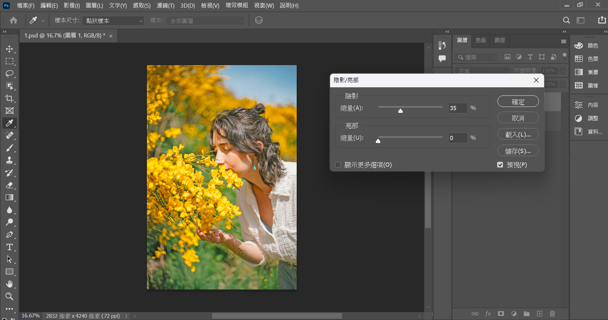

PS 修圖第一招：旅行照片光線補救
針對過暗的照片進行調整，讓圖片看起來更自然。
修圖前後

步驟教學
-
複製照片：
步驟1 - 打開照片，複製一個圖層 -
調整亮度：
步驟2 - 調整亮度 -
隨意調整：
 步驟3 - 隨意調整到自己想要的亮度 -
調整陰影與高光：
步驟4 - 調整陰影與高光 -
銳化圖片：
步驟5 - 銳化圖片 -
保存照片：
步驟6 - 保存照片
PS 修圖第二招：影像尺寸與版面尺寸差異
了解如何調整影像尺寸以適合不同用途。
修圖前後
步驟教學
-
調整影像：
步驟1 - 點選影像尺寸，在選單中的影像標籤裡 -
選擇「影像尺寸」：
步驟2 - 調整影像尺寸，會影響整張原始照片的縮放 -
調整版面尺寸：
步驟3 - 調整版面尺寸，如果比原本尺寸小那就會裁切圖片，比原本尺寸大就會以色塊填補空白版面。 -
保存影像：
步驟4 - 保存影像
PS 修圖第三招：讓照片更有質感
利用選單中的濾鏡功能增加雜訊，讓照片看起來多了許多粗糙的粒子，加上後續調整色調、色階後，看起來就會更有質感。建議使用增加雜訊功能時，總量數值可以調整在20以下會比較自然。
修圖前後

步驟教學
-
增加雜訊功能：
步驟1 - 在濾鏡>雜訊>增加雜訊。 -
調整%數：
步驟2 - 要自然的話就調整在20％以下。 -
完成並保存：
步驟3 - 保存校正後的照片
PS 修圖第四招：色彩平衡調整白平衡、色相飽和度調整整體色調
調整白平衡和色相飽和度，讓圖片更具吸引力。
修圖前後

步驟教學
-
點選調整：
步驟1 - 色相飽和度功能，在影像>調整裡可以找到 -
新增「色彩平衡」調整圖層：
步驟2 - 調整色相後照片會整張變色，如果善用圈選工具就可以只調整部分區域的顏色 -
調整白平衡：
步驟3 - 調整白平衡 -
選擇「自動色彩」調整圖層：
步驟4 -自動色彩，快速調整色彩 -
完成並保存：
步驟5 - 保存照片
PS 修圖第五招：把背景中的路人修掉
或者把後面不需要出現的清除掉
修圖前後

步驟教學
-
先複製一張照片
步驟1 - 先複製一張照片，方便調整好照片之後可以看對比 -
用蓋印章複製照片中類似場景去遮蓋想去掉的東西的方式：
步驟2 - 從左側的工具列找出『仿製印章工具』 -
用蓋印章複製照片中類似場景去遮蓋想去掉的東西的方式-2：
步驟3 - 選擇類似場景去遮蓋想去掉的東西 -
複製旁邊的物品：
步驟4 - 這時候可以把筆刷調大一點 -
完成並保存：
步驟5 - 保存照片